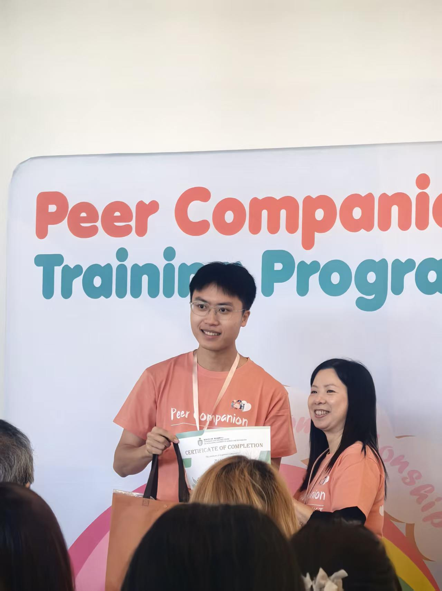
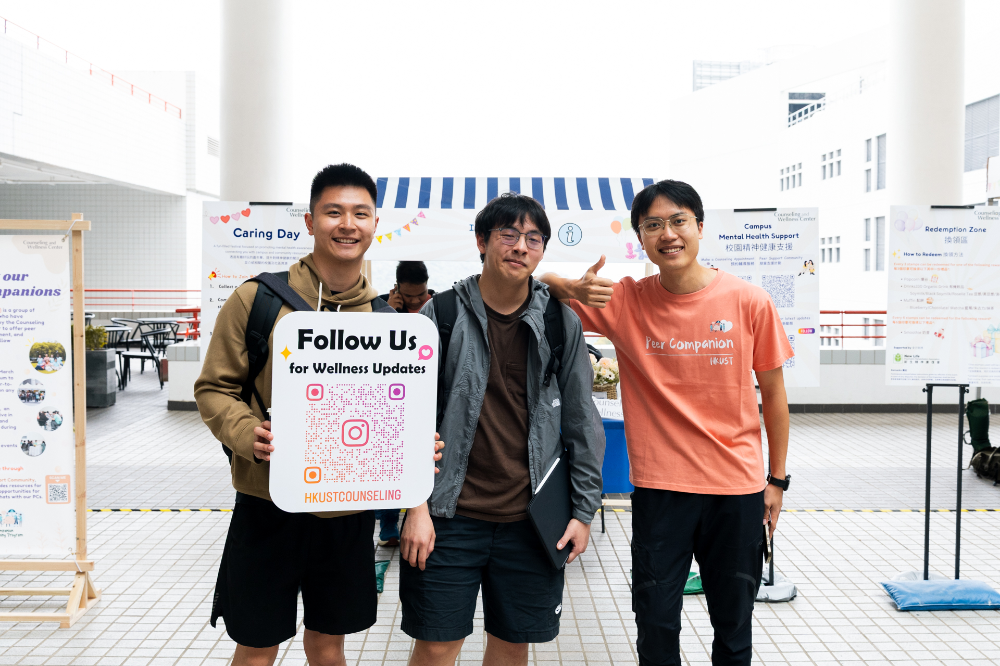
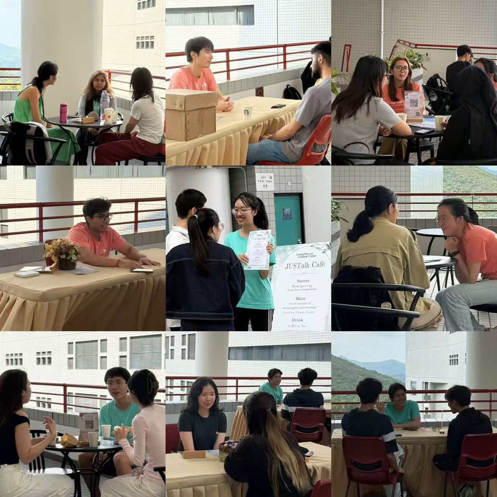

Peer Companion
Peer Companions are trained students in the Counseling and Wellness Center’s Peer Support Community. They keep other HKUST students company, in person and online, and take part in outreach that makes mental wellness easier to talk about: peer chats, campus-wide events, and support during exam weeks. The Center trains them in those support skills before they start.
I joined in December 2024. My part has been the everyday side of that work. Peer coffee chats are short conversations with whoever sits down. Caring Day is a campus booth where students can stop and ask what the Center offers. Exam week has its own programs, when people are most likely to need a quiet place to talk.


